検知器(clip/click/dropout/long_gap/edge/level_step/spec_jump)は、この箇所の前後1.0秒以内に候補を出していません(未検出)。聴いて異常があれば、どの種の異音かを教えてください。
ID / 信頼度 segment / 時刻 症状 / 指標 近傍の語(local whisper) 再生・スペクトログラム 判断欄(表示のみ) STD-01 high Key Phrase 3(英語)voice記録: 本文/KPはAoede系(audit)
クリック/ポップ(瞬間的な波形の飛び)ratio=107.6, abs_d2=0.1149, isolation=0.983
[Take] time. 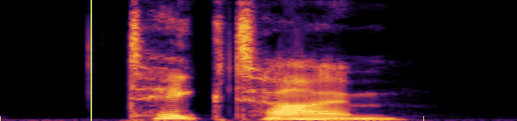
☐ 異常あり ☐ 問題なし ☐ 判断不能 STD-02 medium Full Story Part 2voice記録: 本文/KPはAoede系(audit)
クリック/ポップ(瞬間的な波形の飛び)ratio=81.1, abs_d2=0.0866, isolation=0.957
roast coffee keep [robbings] in stock. Roasting 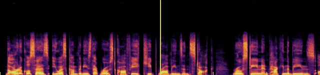
▶ 全編 195.19s から ☐ 異常あり ☐ 問題なし ☐ 判断不能 STD-03 low Full Story Part 2voice記録: 本文/KPはAoede系(audit)
クリック/ポップ(瞬間的な波形の飛び)ratio=40.8, abs_d2=0.0734, isolation=0.939
Reuters. They estimate [robbing] prices take at 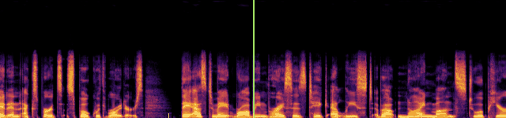
▶ 全編 184.59s から ☐ 異常あり ☐ 問題なし ☐ 判断不能 STD-04 low Full Story Part 3記録voice=Aoede
クリック/ポップ(瞬間的な波形の飛び)ratio=45.8, abs_d2=0.1523, isolation=0.881
pay, and buying [beans.] Even if bean 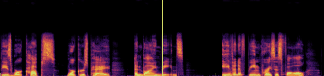
▶ 全編 249.70s から ☐ 異常あり ☐ 問題なし ☐ 判断不能 STD-05 low Comment 2記録voice=Aoede
不自然に長い無音gap_seconds=0.8, silence_thr_db=-52.3
ない よう です。 [です。] では、 豆 の 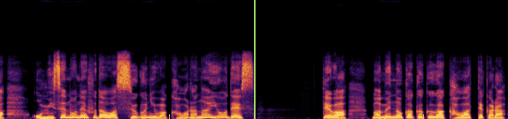
▶ 全編 146.44s から ☐ 異常あり ☐ 問題なし ☐ 判断不能 STD-06 low Full Story Part 2voice記録: 本文/KPはAoede系(audit)
音量の急変(階段状)step_db=-10.9, before_db=-22.6, after_db=-33.5
month a year [earlier.] You might wonder, 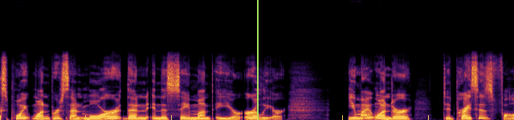
▶ 全編 162.60s から ☐ 異常あり ☐ 問題なし ☐ 判断不能 STD-07 low Full Story Part 2voice記録: 本文/KPはAoede系(audit)
音量の急変(階段状)step_db=11.2, before_db=-31.6, after_db=-20.5
a cafe. Don't [Don't put] the two numbers 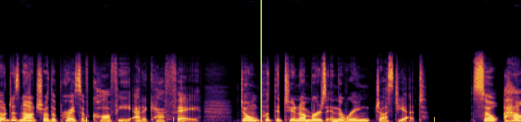
▶ 全編 174.53s から ☐ 異常あり ☐ 問題なし ☐ 判断不能 STD-08 low Full Story Part 2voice記録: 本文/KPはAoede系(audit)
音量の急変(階段状)step_db=-12.1, before_db=-26.2, after_db=-38.3
to reach a [price tag?] tag? People in 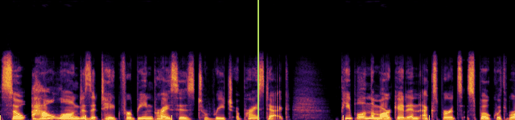
▶ 全編 179.95s から ☐ 異常あり ☐ 問題なし ☐ 判断不能 STD-09 low Full Story Part 2voice記録: 本文/KPはAoede系(audit)
音量の急変(階段状)step_db=-11.0, before_db=-22.5, after_db=-33.5
the beans also [take] time. These companies 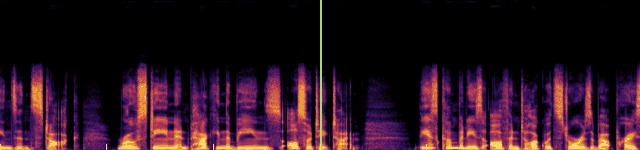
▶ 全編 198.45s から ☐ 異常あり ☐ 問題なし ☐ 判断不能 STD-10 low Full Story Part 3記録voice=Aoede
音量の急変(階段状)step_db=11.1, before_db=-32.3, after_db=-21.2
just beans. A [person] who runs a 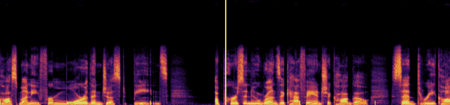
▶ 全編 241.72s から ☐ 異常あり ☐ 問題なし ☐ 判断不能 STD-11 low Full Story Part 3記録voice=Aoede
スペクトルの急変flux_z=8.1
that prices will [fall] in nine months. 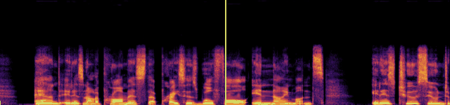
▶ 全編 232.14s から ☐ 異常あり ☐ 問題なし ☐ 判断不能 STD-12 low Full Story Part 3記録voice=Aoede
スペクトルの急変flux_z=8.4
cups, workers pay, [and] buying beans. Even 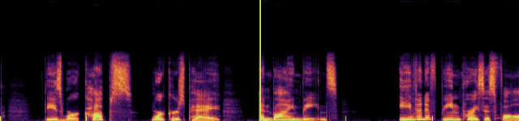
▶ 全編 249.19s から ☐ 異常あり ☐ 問題なし ☐ 判断不能 STD-13 low In One Line記録voice=Aoede
スペクトルの急変flux_z=10.1
[Falling] coffee bean prices 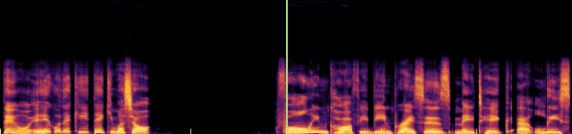
▶ 全編 286.15s から ☐ 異常あり ☐ 問題なし ☐ 判断不能 STD-14 low Full Story Part 1記録voice=Aoede
ローカルASR転写が原稿と異なる語(読み違い・不明瞭の可能性)op=replace, script=now, whisper=no
Beans cost less, [no.] When you hear 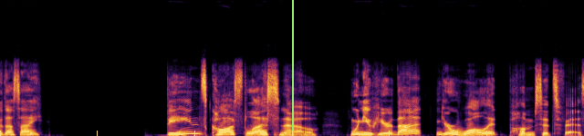
▶ 全編 100.42s から ☐ 異常あり ☐ 問題なし ☐ 判断不能 STD-15 low Full Story Part 1記録voice=Aoede
ローカルASR転写が原稿と異なる語(読み違い・不明瞭の可能性)op=replace, script=there is, whisper=there's
It feels like [there's] a delay. The 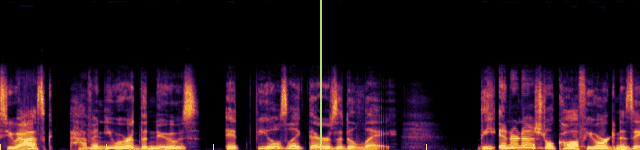
▶ 全編 114.30s から ☐ 異常あり ☐ 問題なし ☐ 判断不能 STD-16 low Full Story Part 1記録voice=Aoede
ローカルASR転写が原稿と異なる語(読み違い・不明瞭の可能性)op=replace, script=8.7%, whisper=8 7
It fell 8 [.7] % from the 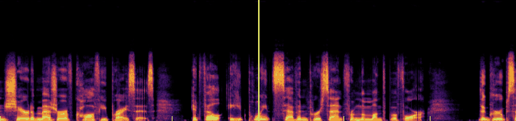
▶ 全編 120.59s から ☐ 異常あり ☐ 問題なし ☐ 判断不能 STD-17 low Full Story Part 1記録voice=Aoede
ローカルASR転写が原稿と異なる語(読み違い・不明瞭の可能性)op=insert, script=, whisper=it
reached the market. [market. it.] It also expected 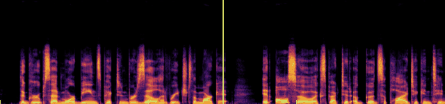
▶ 全編 125.89s から ☐ 異常あり ☐ 問題なし ☐ 判断不能 STD-18 low Full Story Part 2voice記録: 本文/KPはAoede系(audit)
ローカルASR転写が原稿と異なる語(読み違い・不明瞭の可能性)op=replace, script=6.1%, whisper=6 1
coffee cost 6 [.1] % more than 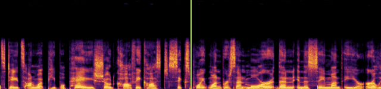
▶ 全編 159.70s から ☐ 異常あり ☐ 問題なし ☐ 判断不能 STD-19 low Full Story Part 2voice記録: 本文/KPはAoede系(audit)
ローカルASR転写が原稿と異なる語(読み違い・不明瞭の可能性)op=replace, script=raw bean, whisper=robbing
Reuters. They estimate [robbing] prices take at 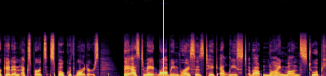
▶ 全編 184.47s から ☐ 異常あり ☐ 問題なし ☐ 判断不能 STD-20 low Full Story Part 2voice記録: 本文/KPはAoede系(audit)
ローカルASR転写が原稿と異なる語(読み違い・不明瞭の可能性)op=replace, script=raw beans, whisper=robbings
roast coffee keep [robbings] in stock. Roasting 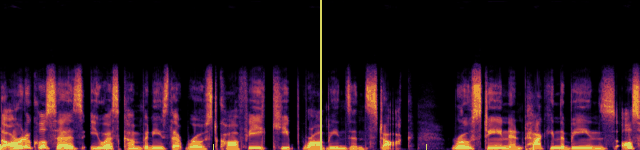
▶ 全編 195.32s から ☐ 異常あり ☐ 問題なし ☐ 判断不能 STD-21 low Full Story Part 3記録voice=Aoede
ローカルASR転写が原稿と異なる語(読み違い・不明瞭の可能性)op=replace, script=do, whisper=2
than how much [two] beans costs now. 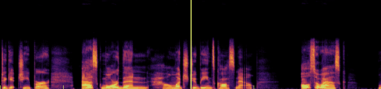
▶ 全編 259.93s から ☐ 異常あり ☐ 問題なし ☐ 判断不能 STD-22 low Full Story Part 3記録voice=Aoede
ローカルASR転写が原稿と異なる語(読み違い・不明瞭の可能性)op=replace, script=cost, whisper=costs
much two beans [costs] now. Also ask, 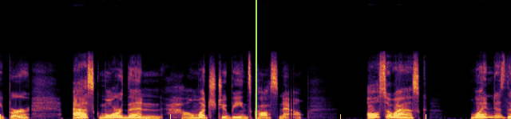
▶ 全編 260.36s から ☐ 異常あり ☐ 問題なし ☐ 判断不能 STD-23 low Full Story Part 3記録voice=Aoede
ローカルASR転写が原稿と異なる語(読み違い・不明瞭の可能性)op=replace, script=hidden, whisper=hitting
have its own [hitting] clock, separate from 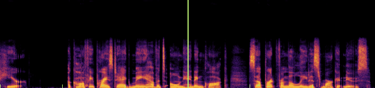
▶ 全編 267.27s から ☐ 異常あり ☐ 問題なし ☐ 判断不能 STD-24 low Topic intro記録voice=Aoede
ローカルASRの信頼度が低い語(聞き取りにくい可能性)word=Coffee, whisper_prob=0.458
Today's topic is [Coffee] Bean Prices Fall. 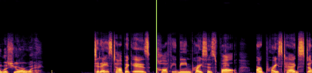
▶ 全編 14.57s から ☐ 異常あり ☐ 問題なし ☐ 判断不能 STD-25 low Full Story Part 1記録voice=Aoede
ローカルASRの信頼度が低い語(聞き取りにくい可能性)word=International, whisper_prob=0.475
a delay. The [International] Coffee Organization shared 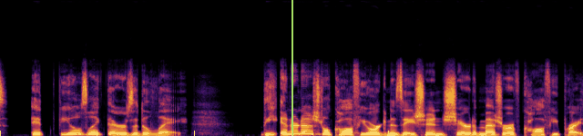
▶ 全編 116.09s から ☐ 異常あり ☐ 問題なし ☐ 判断不能 STD-26 low Full Story Part 2voice記録: 本文/KPはAoede系(audit)
ローカルASRの信頼度が低い語(聞き取りにくい可能性)word=U, whisper_prob=0.472
to appear in [U] .S. shop prices. 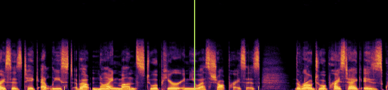
▶ 全編 187.88s から ☐ 異常あり ☐ 問題なし ☐ 判断不能 STD-27 low Full Story Part 3記録voice=Aoede
ローカルASRの信頼度が低い語(聞き取りにくい可能性)word=Even, whisper_prob=0.434
and buying beans. [Even] if bean prices 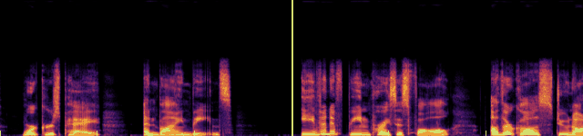
▶ 全編 250.71s から ☐ 異常あり ☐ 問題なし ☐ 判断不能 STD-28 low Full Story Part 3記録voice=Aoede
ローカルASRの信頼度が低い語(聞き取りにくい可能性)word=costs, whisper_prob=0.404
much two beans [costs] now. Also ask, ▶ 全編 260.36s から ☐ 異常あり ☐ 問題なし ☐ 判断不能 STD-29 low In One Line記録voice=Aoede
ローカルASRの信頼度が低い語(聞き取りにくい可能性)word=U, whisper_prob=0.445
months to affect [U] .S. shop prices. 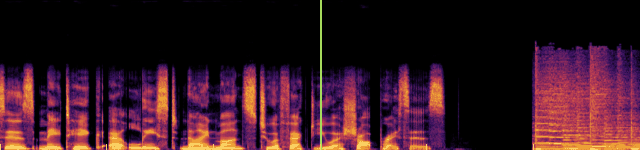
▶ 全編 290.55s から ☐ 異常あり ☐ 問題なし ☐ 判断不能 STD-30 low Key Phrase 1(英語)voice記録: 本文/KPはAoede系(audit)
ローカルASRの信頼度が低い語(聞き取りにくい可能性)word=Robbing, whisper_prob=0.204
[Robbing] 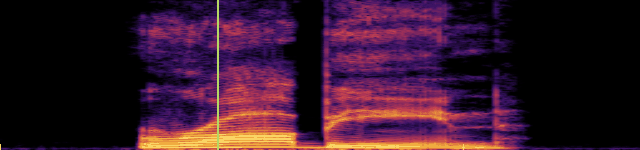
☐ 異常あり ☐ 問題なし ☐ 判断不能
ID / 信頼度 segment / 時刻 症状 / 指標 近傍の語(local whisper) 再生・スペクトログラム 判断欄(表示のみ) ADV-01 medium Full Story Part 1記録voice=Aoede
クリック/ポップ(瞬間的な波形の飛び)ratio=70.0, abs_d2=0.07, isolation=0.967
a price tag [tag that] makes you want 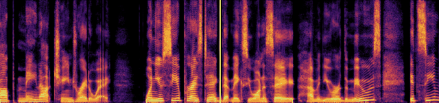
☐ 異常あり ☐ 問題なし ☐ 判断不能 ADV-02 low Full Story Part 1 (Aoede)voice記録: 本文/KPはAoede系(audit)
クリック/ポップ(瞬間的な波形の飛び)ratio=40.8, abs_d2=0.1183, isolation=0.921
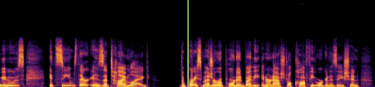
▶ 全編 117.49s から ☐ 異常あり ☐ 問題なし ☐ 判断不能 ADV-03 low Comment 4 (Charon)voice記録: 本文/KPはAoede系(audit)
クリック/ポップ(瞬間的な波形の飛び)ratio=46.6, abs_d2=0.1202, isolation=0.962
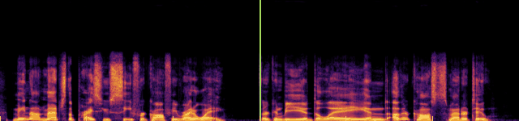
▶ 全編 272.76s から ☐ 異常あり ☐ 問題なし ☐ 判断不能 ADV-04 low Comment 3記録voice=Charon
クリック/ポップ(瞬間的な波形の飛び)ratio=43.5, abs_d2=0.1447, isolation=0.953
か る こと [が] で きます。 次 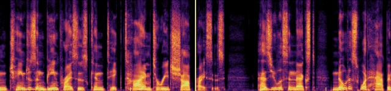
☐ 異常あり ☐ 問題なし ☐ 判断不能 ADV-05 low Comment 4記録voice=Charon
クリック/ポップ(瞬間的な波形の飛び)ratio=57.6, abs_d2=0.364, isolation=0.96
いる の が、 [2] 年 間 に 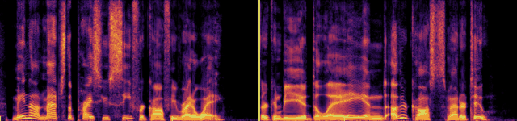
☐ 異常あり ☐ 問題なし ☐ 判断不能 ADV-06 low Comment 4記録voice=Charon
クリック/ポップ(瞬間的な波形の飛び)ratio=41.2, abs_d2=0.1465, isolation=0.977
います。 この お [店] は、 3 年 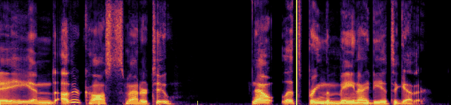
☐ 異常あり ☐ 問題なし ☐ 判断不能 ADV-07 low Full Story Part 1記録voice=Aoede
クリック/ポップ(瞬間的な波形の飛び)ratio=48.9, abs_d2=0.1335, isolation=0.934
% from the [the previous] month. The reason, 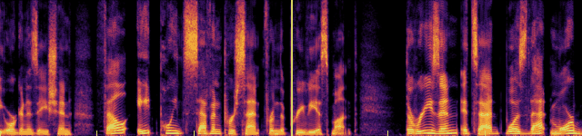
☐ 異常あり ☐ 問題なし ☐ 判断不能 ADV-08 low Full Story Part 3記録voice=Aoede
クリック/ポップ(瞬間的な波形の飛び)ratio=51.7, abs_d2=0.0726, isolation=0.956
now, but also [when] does the price 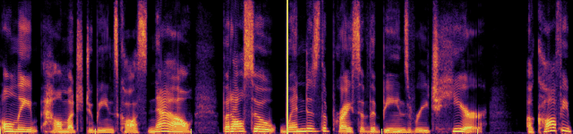
☐ 異常あり ☐ 問題なし ☐ 判断不能 ADV-09 low Preview (Charon)voice記録: 本文/KPはAoede系(audit)
音量の急変(階段状)step_db=-10.7, before_db=-21.4, after_db=-32.1
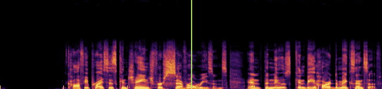
▶ 全編 26.10s から ☐ 異常あり ☐ 問題なし ☐ 判断不能 ADV-10 low pause_0.5voice記録: 本文/KPはAoede系(audit)
音量の急変(階段状)step_db=10.2, before_db=-30.1, after_db=-19.8
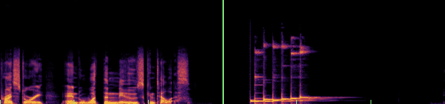
▶ 全編 35.98s から ☐ 異常あり ☐ 問題なし ☐ 判断不能 ADV-11 low Full Story Part 1 (Aoede)voice記録: 本文/KPはAoede系(audit)
音量の急変(階段状)step_db=-16.4, before_db=-19.0, after_db=-35.4
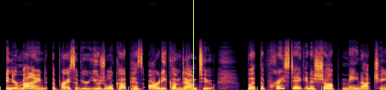
▶ 全編 107.62s から ☐ 異常あり ☐ 問題なし ☐ 判断不能 ADV-12 low Comment 2 (Charon)voice記録: 本文/KPはAoede系(audit)
音量の急変(階段状)step_db=11.4, before_db=-33.4, after_db=-22.0
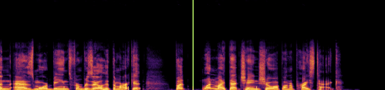
▶ 全編 147.95s から ☐ 異常あり ☐ 問題なし ☐ 判断不能 ADV-13 low Full Story Part 2 (Aoede)voice記録: 本文/KPはAoede系(audit)
音量の急変(階段状)step_db=-14.4, before_db=-27.1, after_db=-41.5
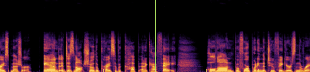
▶ 全編 168.55s から ☐ 異常あり ☐ 問題なし ☐ 判断不能 ADV-14 low Full Story Part 2 (Aoede)voice記録: 本文/KPはAoede系(audit)
音量の急変(階段状)step_db=-10.8, before_db=-25.8, after_db=-36.6
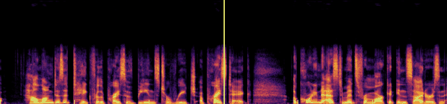
▶ 全編 175.15s から ☐ 異常あり ☐ 問題なし ☐ 判断不能 ADV-15 low Outro (Charon)voice記録: 本文/KPはAoede系(audit)
音量の急変(階段状)step_db=-14.6, before_db=-30.6, after_db=-45.2
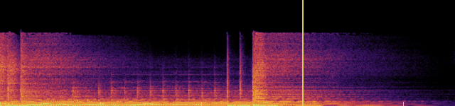
▶ 全編 289.75s から ☐ 異常あり ☐ 問題なし ☐ 判断不能 ADV-16 low Full Story Part 1記録voice=Aoede
音量の急変(階段状)step_db=-11.2, before_db=-19.4, after_db=-30.6
has already come [down to.] to. But the 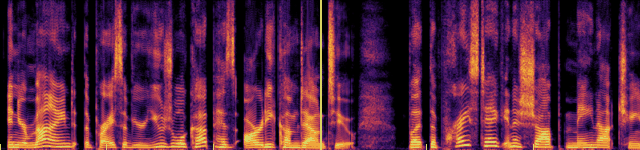
☐ 異常あり ☐ 問題なし ☐ 判断不能 ADV-17 low Full Story Part 2記録voice=Aoede
音量の急変(階段状)step_db=-10.8, before_db=-18.1, after_db=-28.9
leave you wondering, [] did prices go 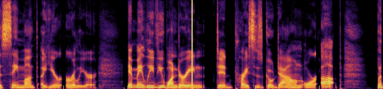
☐ 異常あり ☐ 問題なし ☐ 判断不能 ADV-18 low Full Story Part 2記録voice=Aoede
音量の急変(階段状)step_db=-14.0, before_db=-28.8, after_db=-42.9
cup at a [cafe.] Hold on before 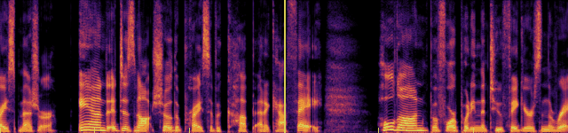
☐ 異常あり ☐ 問題なし ☐ 判断不能 ADV-19 low Full Story Part 2記録voice=Aoede
音量の急変(階段状)step_db=-11.7, before_db=-28.3, after_db=-40.0
reach a price [price tag?] According to estimates 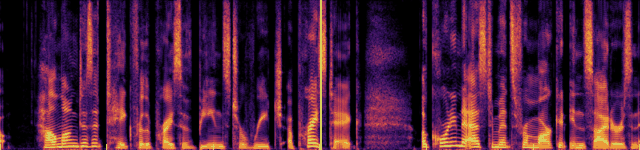
☐ 異常あり ☐ 問題なし ☐ 判断不能 ADV-20 low Preview記録voice=Charon
音量の急変(階段状)step_db=-10.2, before_db=-22.7, after_db=-33.0
ス は 数 [々] な 理 由 ☐ 異常あり ☐ 問題なし ☐ 判断不能 ADV-21 low Key Phrase 2voice記録: 本文/KPはAoede系(audit)
スペクトルの急変flux_z=8.1
▶ 全編 53.05s から ☐ 異常あり ☐ 問題なし ☐ 判断不能 ADV-22 low Key Phrase 3voice記録: 本文/KPはAoede系(audit)
スペクトルの急変flux_z=8.1
▶ 全編 59.47s から ☐ 異常あり ☐ 問題なし ☐ 判断不能 ADV-23 low Full Story Part 1記録voice=Aoede
ローカルASR転写が原稿と異なる語(読み違い・不明瞭の可能性)op=replace, script=too, whisper=to
already come down [to.] But the price ☐ 異常あり ☐ 問題なし ☐ 判断不能 ADV-24 low Full Story Part 1記録voice=Aoede
ローカルASR転写が原稿と異なる語(読み違い・不明瞭の可能性)op=replace, script=8.7%, whisper=8 7
Organization fell 8 [.7] % from the ☐ 異常あり ☐ 問題なし ☐ 判断不能 ADV-25 low Full Story Part 1記録voice=Aoede
ローカルASR転写が原稿と異なる語(読み違い・不明瞭の可能性)op=insert, script=, whisper=it
entered the market [market it,] and a good ☐ 異常あり ☐ 問題なし ☐ 判断不能 ADV-26 low Full Story Part 2記録voice=Aoede
ローカルASR転写が原稿と異なる語(読み違い・不明瞭の可能性)op=replace, script=6.1%, whisper=6 1
coffee was 6 [.1] % higher than ☐ 異常あり ☐ 問題なし ☐ 判断不能 ADV-27 low Full Story Part 2記録voice=Aoede
ローカルASR転写が原稿と異なる語(読み違い・不明瞭の可能性)op=insert, script=, whisper=it
interviewed by Reuters, [it] It takes at ☐ 異常あり ☐ 問題なし ☐ 判断不能 ADV-28 low Full Story Part 1記録voice=Aoede
ローカルASRの信頼度が低い語(聞き取りにくい可能性)word=it,, whisper_prob=0.481
entered the market [market it,] and a good ☐ 異常あり ☐ 問題なし ☐ 判断不能 ADV-29 low Full Story Part 2記録voice=Aoede
ローカルASRの信頼度が低い語(聞き取りにくい可能性)word=how, whisper_prob=0.468
the ring. So [how] long does it ☐ 異常あり ☐ 問題なし ☐ 判断不能 ADV-30 low Key Phrase 1(英語)voice記録: 本文/KPはAoede系(audit)
ローカルASRの信頼度が低い語(聞き取りにくい可能性)word=Lag, whisper_prob=0.413
[Lag] ☐ 異常あり ☐ 問題なし ☐ 判断不能